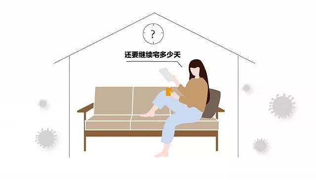
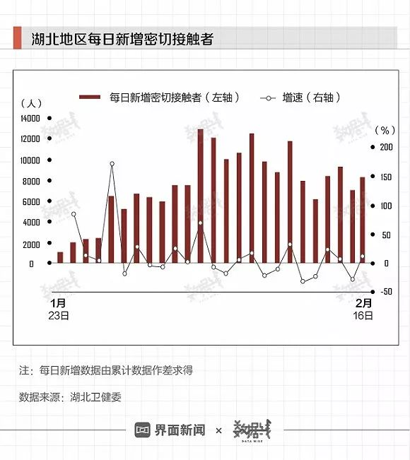
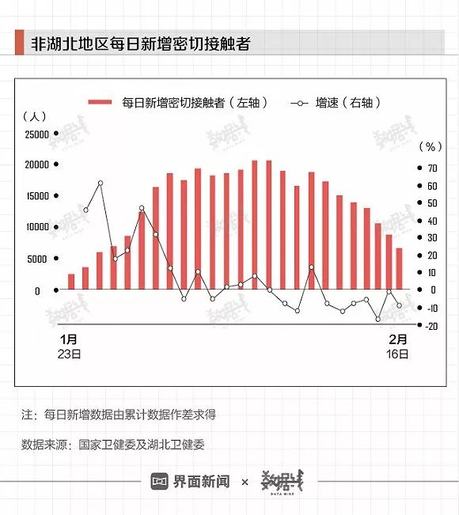
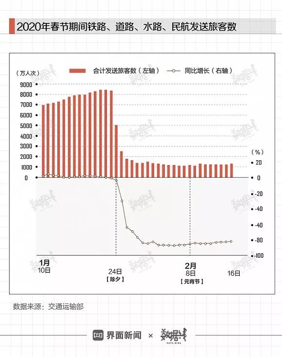

数说疫情0209：洪峰通过，见“顶”可期
原文链接 备份链接 文 |《财经》数据研究员 徐进 编辑 | 谢丽容 元宵节过完了，再下来是“龙抬头”。 1、 今日概况 2月8日0—24时，31个省（自治区、直辖市）和新疆生产建设兵团报告，新增确诊病例2656例（湖北2147例），新增 …
以下文章来源于数据线SJX ，作者张媛 初彦墨
[
数据线SJX
一张图，又快又深又有趣儿（手动滑稽）](#)
作者：张媛 初彦墨 编辑：陈臣
“
考虑到数据的滞后性，春运的影响要等到4月中旬才能在官方公布的数据中得以体现。
”
自“新冠”肺炎病例被通报以来，至今已一月有余。钟南山院士曾公开表示，“早发现、早诊断、早隔离是最原始、最有效的办法”。那么，大家“宅”在家里，效果如何？从数据上来看，能够直观反映隔离效果的指标为“密切接触者”和“尚在医学观察者”。
据国家卫健委数据，截至2月16日，全国累计追踪到的密切接触者54.6016万人。其中，湖北地区为19.1434万人，非湖北地区为35.4582万人。

虽然全国累计追踪到的密切接触者数量已突破50万人，但从每日新增密切接触者数据来看，情况已有所好转。
1月20日以来，全国每日新增密切接触者增速趋缓。同时，自2月7日起，新增数量整体呈下降趋势。这也意味着各地的防控措施，已经在发挥作用。

在疫情最严重的湖北地区，自2月3日起，每日新增密切接触者人数也呈现出下降趋势。

与此同时，非湖北地区“隔离”成效更加明显。2月9日以来，每日新增密切接触者数量已连续七日下降，同时，其增速在此前已有过五次负增长。

从另一项指标来看，据国家卫健委数据，自2月4日起，全国、湖北地区及非湖北地区尚在医学观察的密切接触者数量分别达到“高位”。

但从每日新增情况来看，全国、湖北和非湖北地区每日新增尚在医学观察者均已降为负值。这意味着尚在医学观察者的存量或见顶，同时，也降低了每日新增确诊病例数大幅增长的可能性。

数据之外，现实情况也是如此。2月16日，雷神山医院院长王行环表示，“真正的疫情拐点已经来到，现在里面消耗的很多都是存量”。
2月3日，疾控中心流行病学首席科学家曾光称，“疫情下降的拐点已经出现，但还潜藏着上升的拐点”。
现在最大的担忧就是春运。今年的春运和往年大不相同。大年初一（1月25日）到情人节（2月14日），全国共发送旅客2.83亿人次、日均1348万人次。此次春运，还有更多的人还没踏上返程。
2月6日铁路部门发布公告称，继续延长退票时限，纸质车票退票延期至3月31日。
今年的“春运”会被拉长到何时仍未可知。
据交通部数据，今年除夕前14天，全国铁路、道路、水路、民航日发送旅客数维持在6万-9万人次之间，整体略高于去年同期（同比增速为正值）。这也就是说，年前返程的人不仅没有变少，甚至比去年还要多一点。
除夕之后，疫情持续发酵，返程人数大幅下降。自1月25日起，全国铁路、道路、水路、民航日发送旅客数持续22天同比下降。其中，有18天降幅超80%。这意味着，年后大多数人还没有返程。

2月11日，交通运输部数据显示，从现在到春运结束（2月18日），预计还有1亿6千万人要陆续返程返岗。
4天后，交通运输部再次透露，未来一段时间，主要是农民工返岗和学生返校客流。预计2月底前客流以农民工返岗流为主。综合判断，农民工返程客运量约为3亿人次，到目前已经返程约8000万人次，到2月底将要返程约1.2亿人次，3月以后返程约1亿多人次。
中国疾控中心流行病学首席科学家曾光称，按发病时间估计，拐点比返程高峰推迟一个潜伏期出现，如果按确诊时间估计，还要后延一周左右的时间。
据界面数据估算，若以铁路部门退票截止日期3月31日为春运结束期限，考虑到7-14天潜伏期，另加上一周检测时间。考虑到数据的滞后性，春运的影响要等到4月中旬才能在官方公布的数据中得以体现。
此前，钟南山院士预测峰值将在2月中下旬出现，希望4月前能结束。
未经授权 禁止转载

原文链接 备份链接 文 |《财经》数据研究员 徐进 编辑 | 谢丽容 元宵节过完了，再下来是“龙抬头”。 1、 今日概况 2月8日0—24时，31个省（自治区、直辖市）和新疆生产建设兵团报告，新增确诊病例2656例（湖北2147例），新增 …
原文链接 备份链接 我们为什么预测本月20日前每日新增病例归零？五个依据 2020年2月6日，武汉市蔡甸区人民医院的隔离病房。摄影/陈卓 文 |《财经》数据研究员 徐进 图 |《财经》视觉中心 编辑 | 谢丽容 截至2月16 …
原文链接 备份链接 文 | 《财经》数据研究员 徐进 图 |《财经》视觉中心 编辑 | 谢丽容 1. 全国累计确诊病例趋势 截至2月15日24:00，全国累计报告确诊新冠肺炎病例68500人。以下分地区情况。 图1 有朋友提醒小编：你不 …
原文链接 备份链接 文 |《财经》数据研究员 徐进 图 |《财经》视觉中心 编辑 | 谢丽容 1. 全国累计新增确诊病例 图1 由图可见，国内非湖北地区正趋于平缓。 2. 新增病例：国内非湖北地区继续坚定下降，有望近日归零 图2 国内 …
原文链接 备份链接 文 | 《财经》数据研究员 徐进 图 | 《财经》视觉中心 编辑 | 谢丽容 今日，我们来重点说说湖北的疫情数据。根据湖北卫健委的官方数据，2月12日0时-24时，湖北省新增新冠肺炎病例14840例(含临床诊断病 …